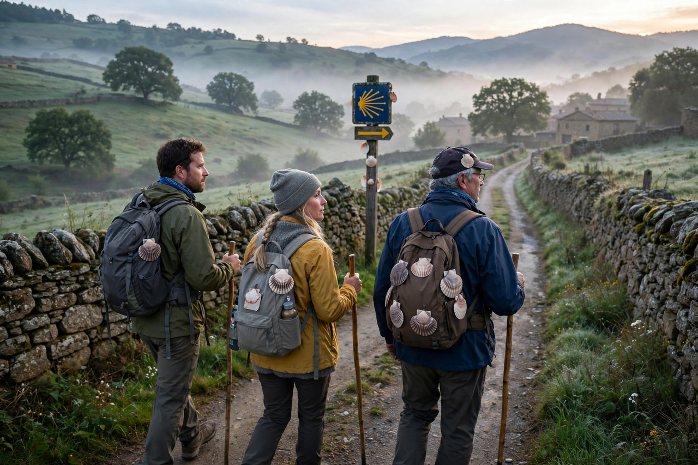

Pilgrimage

A pilgrimage is a journey, often into an unknown or foreign place, where a person goes in search of new or expanded meaning about themselves, others, nature or a higher good, through the experience of travel. Pilgrimages have been made since antiquity in nearly every world religion, typically to a shrine, tomb, temple or sacred landscape, and often on foot over long distances.
Major traditions
In Islam, the Hajj to Mecca is one of the Five Pillars, obligatory once in a lifetime for those able; the annual Arba'een walk to Karbala is among the world's largest gatherings. Hindu pilgrims undertake yatra to sites such as Varanasi, the Char Dham, and the Kumbh Mela festival, the largest religious gathering on earth. Buddhist pilgrimage centres on Lumbini, Bodh Gaya, Sarnath and Kushinagar, the sites of the Buddha's life. Christian pilgrimage flourished to Jerusalem, Rome and Santiago de Compostela, whose Camino routes remain popular; Jewish pilgrimage festivals historically centred on the Temple in Jerusalem. Japan's Shikoku pilgrimage circuits 88 temples associated with Kūkai.
Study and modern practice
Anthropologists Victor and Edith Turner characterised pilgrimage through liminality — a temporary release from ordinary social structure — producing communitas among pilgrims. In the modern era pilgrimage overlaps with tourism and heritage travel, and secular pilgrimages are made to battlefields, graves of cultural figures and sites of personal significance.